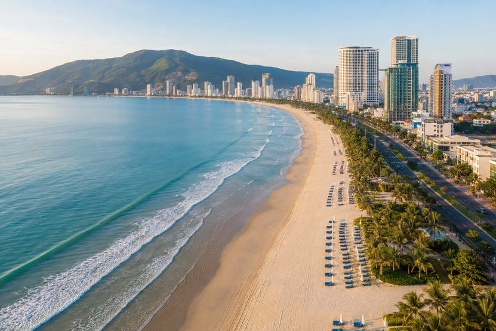

Living here
Da Nang Month by Month: What Each Season Is Like
Bài viết này hiện chỉ có bản tiếng Anh. Menu và phần điều hướng đã chuyển sang tiếng Việt. Alice nói tiếng Việt và tiếng Anh, nhắn tin cho cô nếu bạn cần giải thích bằng tiếng Việt.
Key takeaways
- Da Nang is warm all year. Even in the coolest weeks of January, daytime temperatures sit around 18 to 25°C, and it never gets cold.
- The dry season runs from roughly February to August, with March to June offering the most consistent sunshine of the year.
- The wet months bring green landscapes and cooler evenings, and the city turns toward its restaurants, cafés and indoor life.
- The draw is the combination. Beach, mountains, nature and a full city all sit within fifteen minutes of each other, in every season.
What is the climate in Da Nang?
Da Nang has a tropical monsoon climate with warm temperatures throughout the year and two distinct seasons, one dry and one rainy.

Temperatures range from around 18°C on the coolest January mornings to about 35°C at the height of July. There is no cold season, no snow, and no month where outdoor life stops. What shifts across the year is the light, the rain and the rhythm of the days.
That rhythm is the part people fall for. The year here has a shape to it, and living through the full cycle is a different experience from visiting for a week in one season.
Da Nang weather month by month
| Month | Temperature | Character | What life looks like |
|---|---|---|---|
| January | 18 to 25°C | Cool and gentle | Cafés, coastal walks, the city at an unhurried pace |
| February | 18 to 25°C | Cool and clearing | Exploring the city comfortably, before the heat |
| March | 22 to 30°C | Warm and pleasant | Beach mornings return, outdoor dining, golf |
| April | 22 to 30°C | Warm, sunny and dry | One of the finest months of the year here |
| May | 25 to 34°C | Sunny and tropical | Early mornings and long golden evenings by the sea |
| June | 25 to 34°C | Bright and warm | Coastal living at its fullest |
| July | 26 to 35°C | Peak summer | Morning swims, sunset walks, evenings by the beach |
| August | 26 to 35°C | Peak summer | The sea becomes part of the daily routine |
| September | 25 to 32°C | Transition season | Many beautiful sunny days, occasional rainfall |
| October | 23 to 30°C | Rainy season | Lush green landscapes, cooler evenings, quieter city |
| November | 23 to 30°C | Rainy season | Atmospheric days, long lunches, the city indoors |
| December | 20 to 26°C | Cool and atmospheric | Restaurants, cafés, wellness, urban life |
What is each season like?
January and February: cool and gentle
Mild, comfortable temperatures with occasional rain. Typically 18 to 25°C.
A peaceful time to enjoy the city at a slower pace. The cafés are unhurried, the coastal promenade is quiet in the mornings, and the light in these months is soft and easy. For anyone who finds tropical heat demanding, this is the most comfortable stretch of the year.
March and April: warm and pleasant
One of the most enjoyable periods in Da Nang. The weather turns warmer, sunnier and reliably dry. Typically 22 to 30°C.
Everything outdoors opens back up. Beach days, terrace dining, golf, and long exploring afternoons that do not require planning around the heat. If someone asked me to name the best weeks of the year here, they fall somewhere in April.
May and June: sunny and tropical
Summer arrives with abundant sunshine and rising warmth. Typically 25 to 34°C.
The days take on the shape they hold for the rest of summer. Early mornings by the water, a slower middle of the day, and a long, beautiful late afternoon that stretches into evening. Coastal living is at its best in these months.
July and August: peak summer
The warmest months, with strong sunshine and full tropical heat. Typically 26 to 35°C.
The sea becomes part of everyday life rather than an occasional outing. Morning swims before work, sunset walks along My Khe, evenings spent at the beach where the air finally cools. This is the version of Da Nang that people picture when they imagine living by the ocean.
September: transition season
The year turns gradually from dry toward rainy. Typically 25 to 32°C.
There are still many beautiful sunny days in September, with rainfall becoming more frequent as the month goes on. It is a soft, in-between month, and often an underrated one.
October and November: rainy season
Rainfall increases, arriving in generous bursts. Typically 23 to 30°C.
The city becomes quieter and more atmospheric. The hills turn deep green, the evenings cool, and Da Nang shifts indoors toward its restaurants and cafés. There is a particular pleasure in watching heavy tropical rain from a warm, comfortable apartment, and residents who have been through a few of these seasons tend to look forward to them.
December: cool and atmospheric
The year closes with cooler temperatures, higher humidity and intermittent rain. Typically 20 to 26°C.
A relaxed season for the parts of the city that have nothing to do with the beach. Restaurants, cafés, wellness, gyms, and the ordinary rhythm of urban life. December is when people who live here remember that Da Nang is a real city and not only a coastline.
What is the coastal lifestyle like?
What makes Da Nang unusual is the ability to have beach, mountains, nature and city life inside a single place.
You can swim at My Khe before work, ride up the Son Tra Peninsula on a Saturday and be surrounded by forest twenty minutes later, and have dinner in the middle of a proper city that same evening. Non Nuoc sits at the southern end of the coast with the Marble Mountains rising behind it. None of these are excursions. They are ordinary parts of a normal week.
Very few cities offer that combination. Resort towns have the coastline but empty out. Large cities have the culture but put the beach an hour away. Da Nang is a working city of more than a million people with the ocean at the end of the street.
For anyone looking for a refined coastal life, this is the rare version of it: warm weather, abundant sunshine, a relaxed pace, and the sea present in daily life throughout the year.
Frequently asked questions
What is the weather like in Da Nang?
Da Nang has a tropical monsoon climate with warm temperatures year round and two seasons, dry and rainy. Daily temperatures range from around 18 to 25°C in January to 26 to 35°C in July and August. There is no cold season at any point in the year.
What is the best time of year to visit Da Nang?
March through June offers the most consistent sunshine, with warm dry weather and comfortable temperatures between 22 and 34°C. February is excellent for cooler, gentler days, and July and August suit anyone who wants full tropical summer and time in the sea.
When is the rainy season in Da Nang?
The rainy season runs from around September to December, with the heaviest rainfall in October and November. Rain generally arrives in concentrated bursts rather than lasting all day, and the season brings green landscapes and cooler evenings.
How hot does Da Nang get?
July and August are the warmest months, with daily highs around 35°C. The coolest period is January and February, ranging from about 18 to 25°C. Sea breezes along the coast make the summer heat noticeably more comfortable than inland cities at the same temperature.
Is Da Nang warm all year?
Yes. Even in the coolest weeks of January and February, daytime temperatures typically sit between 18 and 25°C. Warm clothing is rarely needed beyond a light layer in the evening.
What is it like living in Da Nang year round?
Life follows the seasons rather than fighting them. The dry months from February to August centre on the beach and outdoor living, while the wetter months turn toward the city's restaurants, cafés and indoor life. Beach, mountains and city all sit within about fifteen minutes of each other in every season.